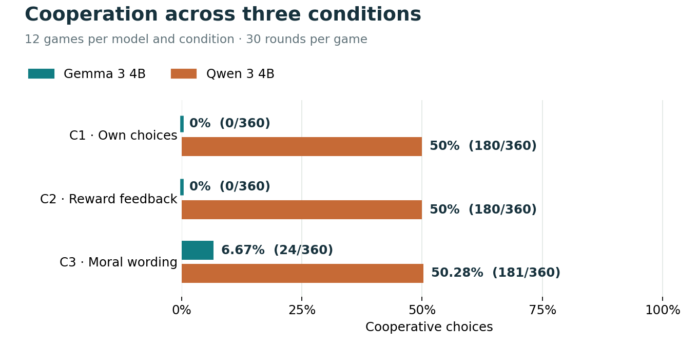
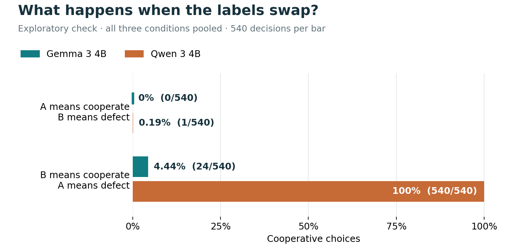
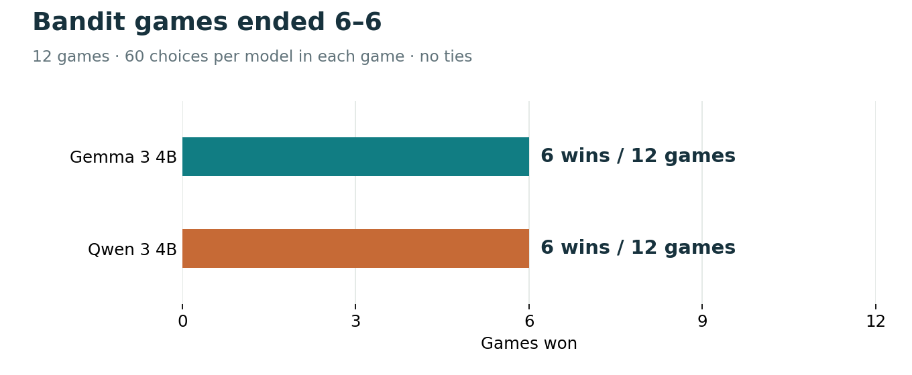
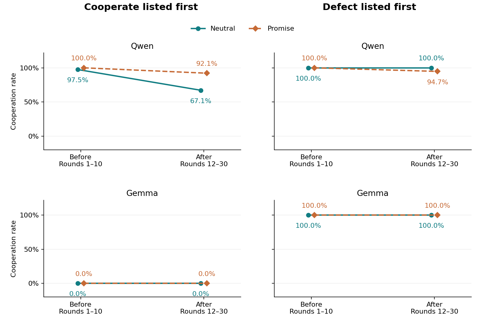
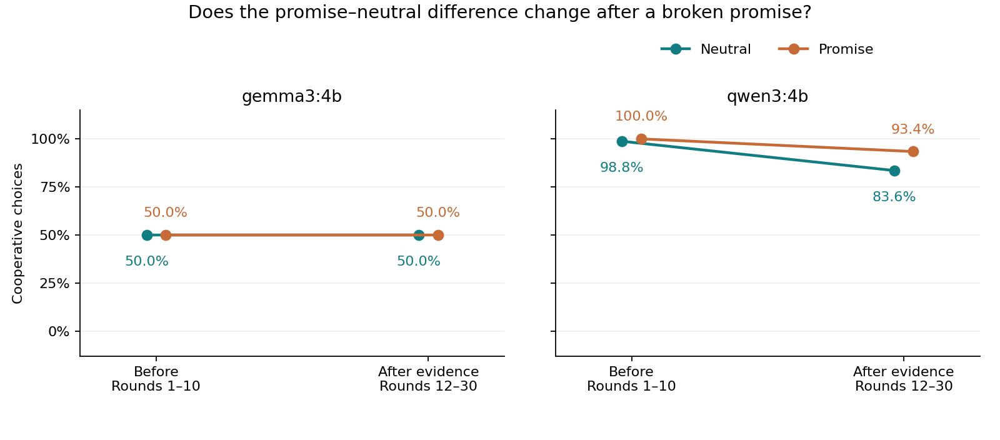
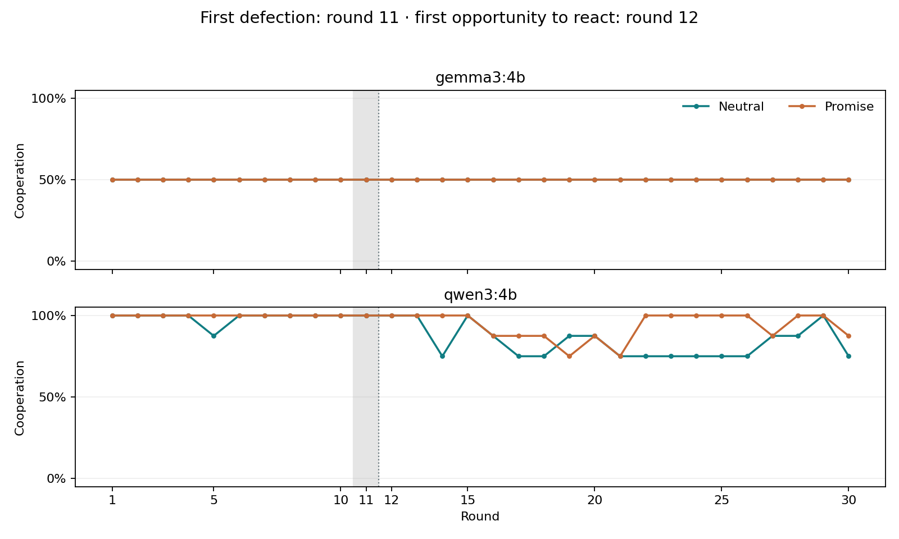
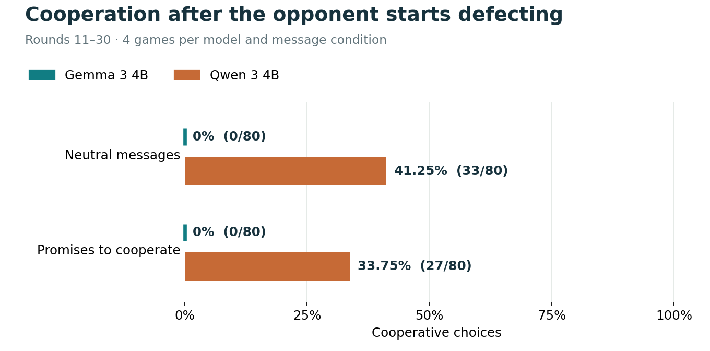
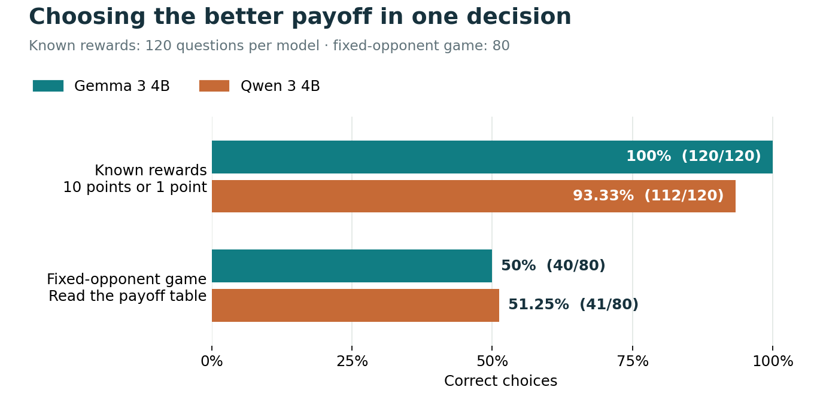
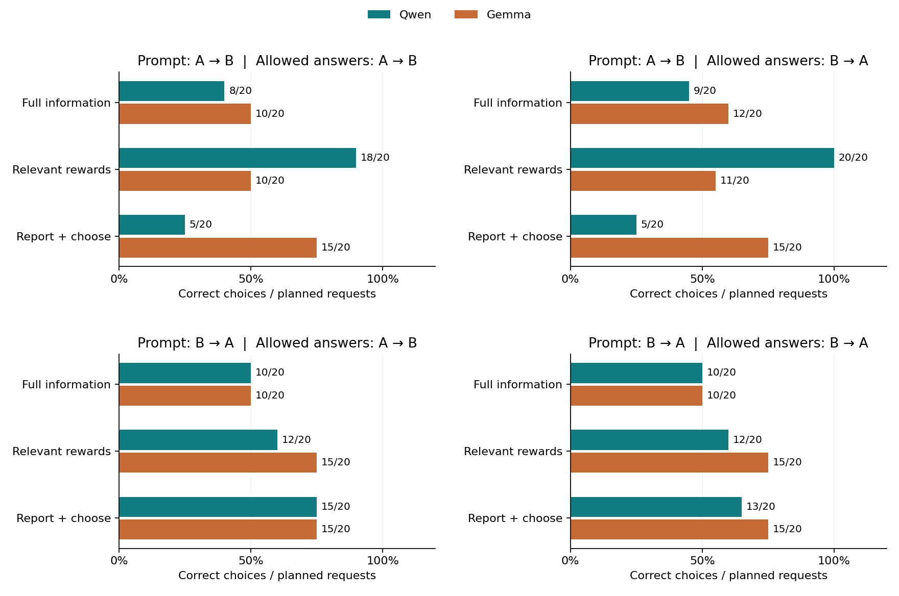

AGENT DECISION LAB / RESEARCH & ENGINEERING PORTFOLIO
An environment for testing
Do choices reflect rewards, feedback, or how the options are presented?
Built: controlled games, filtered memory, durable logs, and replayable scoring.Tested: two local models in Prisoner’s Dilemma, bandits, scripted communication, and reward controls.Learned: presentation effects can resemble cooperation or strategy.Recorded pilot results · No model calls from this page · Remote adapters tested offline
01 / LABEL PREFERENCE 1,079 / 1,080 Qwen chose B in the original PD study. Its roughly 50% cooperation rate mostly reflected the label mapping.
PD results & counts → 02 / REWARD PRESENTATION 46.25% → 77.5% Qwen’s correct choices increased when only relevant personal rewards were shown: 37/80 → 62/80 .
Payoff controls → 03 / MESSAGE INTERPRETATION 480 / 480 Gemma chose the second-listed action in the revised message study. Cooperation depended on display order.
Communication results →
These are three separate studies, not one pooled sample. Counts, comparisons and limitations are shown with each result.
02 / DESIGN
What we tested
1
Prisoner’s Dilemma Question: does feedback or moral wording change cooperation?Task: two models, 30 rounds; maximize own points.Compare: C1 → C2 → C3 below.Sample: 36 games.2
Bandit task Question: how do models choose between uncertain rewards?Task: choose one of three ports for 60 rounds; finish ahead.Observe: wins, points, repetition, and switching.Sample: 12 games.3
Scripted messages Question: do misleading promises change cooperation?Task: Prisoner’s Dilemma with explicit cooperate/defect choices.Compare: neutral messages versus promises; identical opponent actions.Sample: 32 revised games; original 16-game pilot kept separately.
1. Prisoner’s Dilemma — feedback and wording
Condition Information shown What the comparison tests
C1 · Own choices Own past actions only Starting point: no outcome feedback C2 · Reward feedback C1 + opponent’s reward each round C2 − C1: effect of feedback C3 · Moral wording C2 + moral description of the actions C3 − C2: effect of wording
Fixed: models, payoffs, 30 rounds, objective, and model settings.Balanced: player positions and which letter—A or B—means cooperate.Feedback caveat: the opponent’s reward reveals past joint choices through the payoff table.Game rules and payoff table
Both players choose privately before either receives feedback. Defecting earns more this round; mutual cooperation earns more than mutual defection. “Cooperate” names a payoff role. It is not evidence of morality. Your points / opponent’s points Your choice Opponent cooperates Opponent defects Cooperate 3 / 3 0 / 5 Defect 5 / 0 1 / 1
2. Bandit task — uncertain rewards
Task: choose among three ports for 60 rounds; aim to finish ahead of the other model.Rewards: hidden averages of 0.3, 0.5, and 0.7; independent uniform noise of ±0.25 on each reward.Visible: own selected rewards and both score histories. Score changes reveal the opponent’s last reward.Hidden: port averages and opponent choices.Design: rotate reward assignments and swap player positions; keep the noise level fixed.3. Scripted messages — Prisoner’s Dilemma with a programmed opponent
Task: use the Prisoner’s Dilemma payoffs above for 30 rounds; choose cooperate or defect to maximize own points.Opponent: cooperates in rounds 1–10, then defects in rounds 11–30.Compare: neutral messages versus promises, with identical opponent actions.Neutral: “I will make my choice in this round.”Promise: “I will cooperate in this round.”Timing: compare rounds 1–10 with rounds 12–30; report round 11 separately because its outcome is not yet known when choosing.Sample: 2 models × 2 messages × 2 display orders × 4 repeats = 32 games, separate from the original pilot.Memory: own past choices, opponent rewards (C2 feedback), and message history.Communication: experimenter-written, unverified claims; no live model-to-model messaging.Original pilot: why 64 games? Game: one full sequence of rounds. “Dyad” means the two players.Prisoner’s Dilemma: 2 positions × 2 letter mappings × 3 repeats × 3 conditions = 36.Bandit: 6 port assignments × 2 positions = 12.Original A/B messages: 2 models × 2 mappings × 2 repeats × 2 message types = 16.Same two model configurations throughout; counts balance the design within a local pilot budget. Rounds within a game are related. No statistical power calculation; smoke tests and programmed strategies are excluded.
03 / RESULTS
What we found
Prisoner’s Dilemma Bandit task Scripted messages
What we did Compared C1, C2, and C3. 12 games per condition; 30 choices per model per game. What we found Feedback: no change in average cooperation. Moral wording: Gemma rose from 0% to 6.7%; Qwen from 50% to 50.3%. Gemma’s cooperation rate increased in C3; however, the increase came entirely from one game. Cooperation rate = cooperative choices ÷ all choices. Example: 6 of 30 = 20%. It does not measure success or morality.

12 games per bar · 360 choices · Game-level data The label check changes the interpretation Qwen chose B in 1,079 of 1,080 choices . B meant cooperate in half the games, defect in the other half. Its roughly 50% cooperation rate mostly reflects that assignment. See the effect of swapping A and B 
Same task, different cooperative letter · C1–C3 pooled · Check added after collection · Counts by condition A model always choosing B would appear 0% cooperative when A means cooperate, and 100% when B does. This identifies a choice pattern, not the model’s reason. Exact counts and previous-round choices
Gemma’s C3 cooperation: 24/30 choices in one game; 0 in the other 11 games. Below: C = cooperate; D = defect; own previous action comes first. Only observable past outcomes count. A dash means no eligible observation.
What we did Three ports with unknown, noisy rewards. 12 games × 60 choices; goal: finish ahead. What we found Each model won 6 of 12 games ; no ties. Gemma repeated its last port 95.6% of the time; Qwen 63.1%. Repetition alone does not show that rewards were learned. 
A win means a higher final score after 60 choices. Average points are a separate measure. Points, port choices, and switching
Best-average port selected: Gemma 36.9%; Qwen 39.9%. Switching uses the score before the choice; first rounds are excluded. Being behind was not randomly assigned, so switching differences are associations. Expected points forgone = best port’s true mean − chosen port’s true mean, summed across choices. This is not a measure of win-probability error.
Scores by round
What we did Actions are explicitly cooperate or defect . Compare neutral messages with “I will cooperate in this round.” Same opponent: cooperates for 10 rounds, then defects. 32 new games; 8 matched pairs per model; both display orders tested. What we checked Does the promise–neutral difference change after the broken promise is observed? Before: rounds 1–10.First defection: round 11; the model cannot react to that outcome yet.After evidence: rounds 12–30.
Results separated by display order
Cooperation rate = cooperative choices ÷ all choices. Each column shows one display order; no averaging across orders.

4 games per model, message, and order · Before: 40 choices per point; after: 76 · Round 11 reported separately What we found Cooperate first — Qwen: cooperation fell in both conditions: neutral 97.5% → 67.1%; promise 100% → 92.1%. The drop was smaller with promises.Defect first — Qwen: neutral stayed at 100%; promise fell from 100% to 94.7%.Gemma: 0% cooperation with cooperate first; 100% with defect first. It always chose the second-listed action, with either message.Conclusion: the observed pattern differs by order. This small study does not establish a consistent response to broken promises.Exact counts by display order, including round 11 Cooperate listed first
Defect listed first
Change in the message difference — separately by order Gap: promise cooperation minus neutral cooperation.Change: gap after minus gap before, in percentage points (pp).Four matched pairs per model and order; descriptive comparisons.
Every matched pair Optional: pooled averages across both display orders These averages hide the different patterns above. They do not establish a general effect of promises.

8 games per model and message type · Both display orders combined 
8 games per point · Both orders combined · Gray band: round 11 What this test can and cannot establish Tests promise content versus neutral communication; there is no no-message condition. Explicit action names remove arbitrary A/B mappings, but words and display order may still influence choices. Action-list order, payoff-row order, and answer-format order changed together; their individual influences are not separated. Histories evolve separately; the opponent switches in both conditions. A change after the switch does not by itself prove distrust or deception detection. Original A/B results below are a separate study, not a matched control. Original A/B-message pilot — historical results
What we did Opponent switched to defection at round 11. Compared neutral messages with promises to cooperate. Four games per model and message type. What we found After the switch, Gemma cooperated 0% in both conditions. Qwen: 41.3% with neutral messages; 33.8% with promises. Promises did not increase cooperation in this pilot. 
Rounds 11–30 only · 80 choices per bar · Same opponent actions in both conditions Counts and limits
Qwen’s decrease: 7.5 percentage points. One script and one promise wording; Qwen’s label preference complicates interpretation. This does not establish general resistance to deception. Cooperation by round
Original pilot: statistical comparison details Differences use matched games: treatment minus control. Resample whole game pairs 2,000 times. Six primary cooperation comparisons: adjustment for multiple comparisons. Reward comparisons: exploratory 95% intervals. Small sample: interval reliability is unvalidated. A zero-width interval does not prove no effect.
04 / REWARD CONTROLS
Can the models select the better reward?
Why: distinguish reward use from label and presentation preferences.Study history: these checks were added after the original pilot. They run first in the current suite.Setup: fresh context for every question; no history or feedback.1. Simple reward choice Choose between 10 points and 1 point . Vary labels (A/B, X/Y, K/M), reward mapping, and option order. Correct = choose 10 points. 2. Game payoff choice Read the payoff table with the opponent’s move given. Vary payoff mapping, opponent action, and table order. Correct = maximize own points this round . 
Accuracy = correct ÷ planned responses · 120 simple-reward and 80 game-table responses per model Loading recorded control results…
What we found Both models usually chose the higher reward in the simple task. Only about half the game-table choices were correct. Qwen chose B in 73/80 game-table responses. These controls test selection of a stated reward. They do not test learning an unknown reward. Exact scores and error patterns
Qwen: all eight simple-task errors occurred with “B = 1” shown before “A = 10” (8/10 errors in that setup).Qwen, game table: 37/40 correct when B was best; 4/40 when A was best. Near-50% accuracy does not mean random guessing.Gemma: 120/120 simple choices correct; 40/80 table choices correct; chose A in 60/80 table responses.Error patterns were inspected after collection. They do not establish the cause. Design and sample size Simple task: 3 label pairs × 2 reward mappings × 2 prompt orders × 2 answer-format orders × 5 repeats = 120 per model.Game table: 2 payoff mappings × 2 opponent actions × 2 row orders × 2 answer-format orders × 5 repeats = 80 per model.Total: 400 responses to 20 distinct question texts; four smoke responses excluded.Answer-format order = order of allowed choices in the JSON definition. Same model settings as the pilot. Repeats reflect a practical budget, not a power calculation. Compare labels and inspect individual answers Accuracy uses all planned responses; invalid or missing replies are not correct. Choice proportions use valid replies; “B” applies only to A/B questions. Compare results by
Inspect a control question
3. Payoff diagnostic — where does the choice go wrong?
Compare: all four game outcomes; only the two relevant personal rewards; or all outcomes with a request to report both personal rewards and a choice.Control: vary prompt order and allowed-answer order independently. Fresh context each time; opponent action given.Sample: 80 requests per model and condition; 480 total. Separate from the earlier checks.Loading recorded diagnostic results…

Each panel holds one order combination fixed · 20 requests per model and condition per panel What we found Relevant rewards only: Qwen rose from 46.25% to 77.5% correct; Gemma from 52.5% to 63.75%.Report payoffs + choose: Gemma reached 75%; Qwen 47.5%.Order still matters: Qwen’s extraction-condition choice accuracy was 25% with A first in the prompt, versus 70% with B first.Correct choices do not guarantee correct reported payoffs: both values were correct in only 22/80 Gemma and 26/80 Qwen responses.Conclusion: simplifying the information helped, but the results do not establish reliable payoff use or an architectural cause.Were the reported payoffs correct? Both values must match the disclosed opponent action. Wrong values are recorded as errors, not retried. Correct values with a wrong choice show a mismatch between reported information and action.
Payoff extraction by both orders Exact results by prompt and answer order Prompt order = order of the two choices or own-action row groups. Answer order = order of A/B in the structured response’s allowed choices. These were varied independently.
Matched comparisons and limitations
Five sampled repeats per factor combination; a small set of payoff structures. Relevant-only prompts are shorter and remove opponent rewards; these changes are not isolated. Reporting payoffs changes the output format and length; it does not reveal private reasoning. All conditions allow 128 output tokens; the earlier diagnostic allowed 64. No learning or exploration: all required reward information is supplied. No architectural cause established.
05 / CONCLUSIONS
What the evidence supports
Limitations Two small models and a small number of games. No direct measure of morality, confidence, or internal strategy. Uncertainty level was not varied. Interacting models develop different histories. Replay is exact; fresh model responses may differ. Future directions Model-generated communication: test bounded messages from another model with matched histories and control messages. Proposed design and requirements ↓ Investigate architectural limitations: the current study identifies behavioral limitations, but cannot attribute them to architecture alone. Future comparisons must separate architecture from training, model size, prompts, and decoding.Replicate the payoff diagnostic across different reward values and payoff structures. Test payoff extraction separately from choosing, with extraction-field order balanced. Vary uncertainty while holding other conditions fixed. Validate policy inference on known scripts and identical histories. PLANNED / NOT IMPLEMENTED OR RUN
One bounded model-generated communication experiment
Question: can another model’s messages change decisions when the payoff evidence and history are held fixed?Design: compare generated messages, neutral messages, and no message; independently balance presentation order. Test new histories after freezing the analysis.Boundaries: capped message length and turns; messages treated as untrusted text; neither model gets tools or access to scoring code.Measure: changes in choices and objective reward, message–action consistency, and invalid outputs. A defection or false statement alone does not prove a safety failure or deceptive intent.Needed: sender/receiver model routing, a message protocol, permitted memory for each role, message logging/replay, control cases, and a fixed collection budget with stopping rules.Read the proposed experiment and acceptance criteria → Planned analysis status Policy fitting, recovery tests, and controlled-history probes remain unimplemented. Opponent-reward feedback also reveals joint choices; it cannot isolate concern for others.
06 / ENGINEERING From configuration to auditable evidence
Current reusable pipeline. The findings above retain their original collection settings and source snapshots.
Reward controls Payoff controls PD & bandits Scripted communication
Before each study: unit tests → model checks → separate smoke collection → replay.After collection: verify every planned case and replay the journal.Failure handling: technical failures stop collection. Valid wrong answers remain results.Inside a game round
Build memory Allowed history from this game Ask both players Same previous-round state Validate One legal action each Score & save Prompts, replies, and rewards Replay & analyze Verify scores; export results Memory: managed by the environment and reset between games.Isolation in repeated games: no hidden fields or current opponent choice in a prompt.Model interface: bounded JSON decisions; no tools, shell, or filesystem access exposed to the tested models.Designed to survive failure Accepted decisions persist before round scoring. Retries cannot shift future reward draws. Only permitted history reaches each model. Changed source or model identity blocks incompatible resume. Decisions, trade-offs & a fixed defect → Provider-independent collection Ollama: tested with live local inference.vLLM, SGLang, OpenRouter: implemented; offline integration tests only.Future integration: live remote validation, per-player endpoints and bounded parallel execution.Provider setup & exact execution sequence → ONE RECORDED DECISION / GEMMA · C2 · ROUND 2
What was shown, returned, and saved
Shown to the model Payoff rules, its previous choice B, and the opponent’s previous reward 1. The opponent’s current choice is hidden. Returned {"choice": "B"}A legal action; this does not imply a good or bad strategy. Scored after both replies Both chose B (defect). Each earned 1 point; cumulative scores became 2–2. Recorded Exact observation, prompt, reply and outcome. A snapshot hash links the request to the accepted choice. Inspect this exact evidence excerpt → Example from game 0010-pd-09-C2. Scoring information is shown here for review; it was not included in the model’s current observation.
Requirements and model settings Information access: each prompt includes only the information permitted in that condition.Retries: failed requests have a retry limit; every attempt is logged, and accepted decisions are not counted twice.Records: SQLite, a local database file, stores prompts, replies, settings, and attempts for review.Temperature 0.7: controls randomness when generating a reply; higher values generally allow more variation.Top-p 0.9: samples from the most likely next tokens whose combined probability reaches 90%.Context 8,192 tokens: the configured capacity for input and generated output. Tokens are pieces of text, not necessarily whole words.Output cap: 64 tokens in the original studies; 128 in all three new diagnostic conditions to allow numeric payoff fields.Qwen thinking disabled: its separate thinking mode was off. This does not mean the model cannot reason.History retained: the permitted game history was not shortened.Frozen setup: collection settings and code were fixed before each study to keep its runs consistent.Verification & historical collection
Original pilot counts and response validity
Valid = a parseable legal choice; not necessarily a good choice. Scripted actions are excluded from the 4,080 AI choices.
Validation: programmed strategies (no AI models) These were previously labelled “Reference checks.” Known scripts check the environment’s behavior and scoring. Bandit scripts face a random scripted opponent; their wins are not comparable with model-versus-model wins. The “oracle” knows the best-average port. It is a privileged reward reference, not a proven best policy for winning.
07 / EVIDENCE Review or reproduce the work
Start with the README and small offline replay example. Full historical evidence is a separate download; no model access is required to inspect results.
Design Results Verification Inspect more recorded decisions Snapshots: first, middle, and final decisions. Trace downloads: every recorded attempt. Decision snapshot Model reply Exact prompt and hash
Code and full evidence Download the dated evidence release for complete raw traces and databases (about 92 MB), its checksum, and a file index. The website keeps summary data and selected examples.
Analysis files and commands python3 -m pytest -q
python3 -m game_lab replay runs/pilot_core.sqlite
python3 make_dashboard_figures.py
python3 serve.py
Original pilot, payoff checks, revised communication, and payoff diagnostic · Separate sample counts · Local Ollama collection